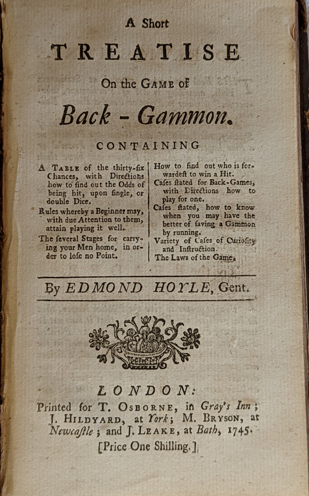

A Descriptive Bibliography of Edmond Hoyle
Copyright © 2014-26 by David Levy
(page updated 2026-01-30)User Guide
Backgammon.2
A Short Treatise on the Game of Backgammon, printed for T. Osborne et al, second London edition, 1745.
 |
Title: | A Short | TREATISE | On the Game of | Back-Gammon. | CONTAINING, | [11 lines to left of rule] A Table of the thirty-ſix | Chances, with Directions | how to find out the Odds of | being hit, upon ſingle, or | double Dice. | Rules whereby a Beginner may, | with due Attention to them, | attain playing it well. | The ſeveral Stages for carry-|ing your Men home, in or-|der to loſe no Point. | [11 lines to right of rule] How to find out who is for-|wardeſt to win a Hit. | Caſes ſtated for Back-Games, | with Directions how to | play for one. | Caſes ſtated, how to know | when you may have the | better of ſaving a Gammon | by running. | Variety of Caſes of Curioſity | and Inſtruction. | The Laws of the Game. | [rule] | By EDMOND HOYLE, Gent. | [rule] | [tailpiece Spedding T13] | LONDON: | Printed for T. Osborne, in Gray's Inn; | J. Hildyard, at York; M. Bryson, at | Newcaſtle; and J. Leake, at Bath, 1745. | {Price One Shilling.} |
| Collation: | 12o: [A]1 B–F6 G1 [$½ (−B3) signed]; 32 leaves, pp. [2 ] 1–61 [62] |
| Contents: | Signature (Page) Reference | Contents | Signature (Page) Reference | Running Titles |
| A1r | title with autograph of Edmond Hoyle | |||
| A1v | ‘ADVERTISEMENT. | [...] | To the READER. | [...]’ | |||
| B1r–F4r (1–55) | ‘[headpiece Spedding H09] | A Short | TREATISE | On the Game of | Back-Gammon. | [...]’ | B1v–G1r (2–61) | ‘A ſhort Treatise on | the Game of Back-Gammon.’ | |
| F4v (56) | ‘[row of type orn] | The LAWS of Back-Gammon. | [...]’ | |||
| F5r–G1r (57–61) | ‘[row of type orn] | An Alphabetical | TABLE | OF THE | CONTENTS. | [...]’ | |||
| G1v (62) | blank |
| Catchwords: | B5v(10) VI. [IV.] |
| Publisher: | Thomas Osborne |
| Printer: | Thomas Gardner (ornaments) |
| Notices: | 1745-10-26 London Evening Post: "On the 9th of November will be publish'd...price 1s." |
| Price: | 1s. (title, advertisement) |
| References: | ESTC T86570, Jessel 778 (giving an incorrect date of 1744), Marshall s7 no.8 p263 (1889-10-05), Rather 20 |
| Copies Seen: | L [7919.de.3(2)] (ECCO); NvLN [GV1295.H68 1745]; NvLN [GV1469.B2 H6 1745]; Levy [1019] |
| Copies Seen in Collections: | L [7917.de.56(2)] (see Osborne.E); O [3843 f.10(4)] (see Osborne.E); O [Jessel f.544(4)] (see Osborne.A); O [Jessel f.545(4)] (see Osborne.C); O [Jessel f.546(4)] (see Osborne.B); O [Jessel f.548(4)] (see Osborne.E); Copisarow (see Osborne.B); CLU-C [*GV1277.H86 1746] (see Osborne.C); CSFU [GV1277.H89 1746] (lacking leaves after D5) (see Osborne.B); DLC [GV1277.H89 1746] (see Osborne.B); DLC [GV1277.H89 1747] (see Osborne.D); NvLN [GV1241.H69 1746] (see Osborne.B); NvLN [GV1277.H69 1747b] (see Osborne.D); OCl [789.87H F46L] (see Osborne.B); PPL [Iu Hoyl Allen 333 no.4] (see Osborne.A); TNJ [GV1241.H6 1746] (see Osborne.C); TNJ [GV1241.H8 A6] (see Osborne.C); TNJ [GV1241.H8 A7] (see Osborne.E); TxU [GV1277.H89 1746] (see Osborne.C); Levy [1617] (see Osborne.B); Levy [1685] (see Osborne.C); Levy [1764] (see Osborne.C); Levy [1769] (see Osborne.E); Levy [2097] (see Osborne.A); Levy [2112] (see Osborne.D) |
| Other Copies in Collections: | Sings (see Osborne.B); HAG [KW 973 L 6 [2]] (see Osborne.C); Beauchene (see Osborne.B); Beauchene (see Osborne.D); CtY-BR [NLp80 742he] (see Osborne.C); AuNU [RB 4645.17 at 4646.43] (see Osborne.C); AuVSL [793 H85 (1746)] (see Osborne.B) |